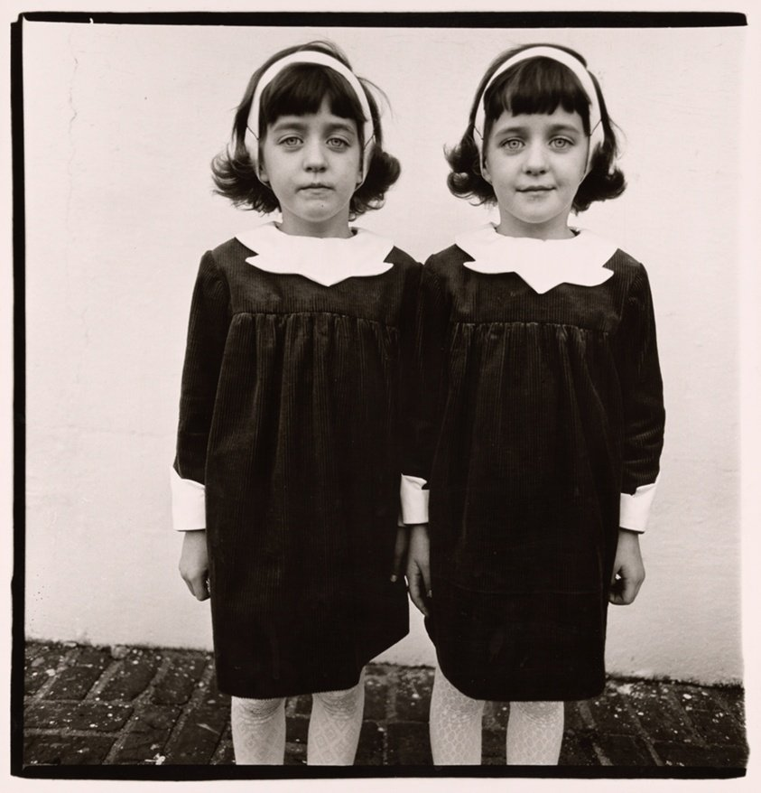

Identical Twins, Roselle, N.J.
Diane Arbus · 1967 · Gelatin silver print · 38 × 37 cm · Art Institute of Chicago
In copyright. Look and learn: shown for study, not for download.
Cathleen and Colleen Wade were seven when Diane Arbus found them at a Christmas party for twins and triplets in 1967, and she stood them against the wall of the Knights of Columbus hall in Roselle. Their matching dresses were green. A year after her death in 1971, the picture went on the cover of the Aperture monograph of her work. This print was given to the Art Institute by Richard Avedon; another sold at Sotheby's in 2004 for $478,000.